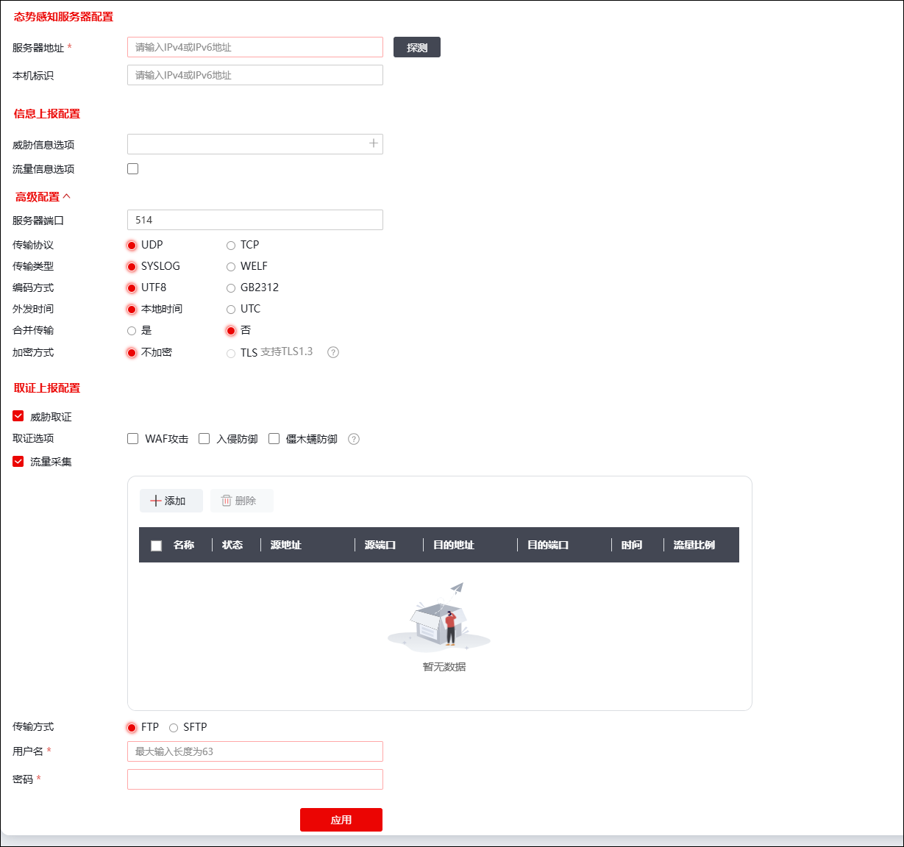

随着计算机和通信技术的迅速发展，计算机网络的应用越来越广泛，其规模越来越庞大，多层面的网络安全威胁和安全风险也在不断增加，网络病毒、Dos/DDos攻击等构成的威胁和损失越来越大，网络攻击行为向着分布化、规模化、复杂化等趋势发展。虽然所有的攻击行为都会在网络或者系统中留有痕迹，但这样的痕迹都分散在各个系统中，形成一个个的信息孤岛，造成攻击事件日志信息独立分散，可研判性、可信度比较低、无法确认攻击事件。攻击事件都是在发生后，数据在网络上广为流传后企业才会发现曾经有过这个攻击事件，但具体的时间、形式等信息都难以察觉。
为应对以上问题，NGFW内置探针模块，通过将采集的特定信息上报给态势感知平台，由态势感知平台以全网视角综合分析威胁事件，提升对威胁事件的响应速度。
NGFW的探针功能分为流量探针和威胁探针两大类：流量探针可以采集NGFW的原始流量和连接模块的日志信息，威胁探针可以采集WAF、IPS、僵木蠕模块的报文留存信息和各安全引擎的日志信息。NGFW会将采集到的日志信息解析、转换后，按照标准的日志格式通过TCP或者UDP协议上报给态势感知平台，态势感知平台再对这些日志信息进行深度分析处理，根据分析结果来调整网络环境中安全设备的安全策略。
| 步骤1 | 选择 ，界面如下图所示。 |

在配置探针时，各项参数的具体说明如下表所示。
参数 |
说明 |
|
|---|---|---|
态势感知服务器配置 |
服务器地址 |
必填项，配置态感服务器的地址，支持配置IPv4/6地址。点击【探测】可探测防火墙与配置的服务器地址是否网络可达。 |
本机标识 |
输入本机与态感平台联动时使用的IP地址，支持配置IPv4/6地址。 |
|
信息上报设置 |
威胁信息选项 |
点击复选框，在弹出窗口中选择需要向态感平台上传的威胁类别日志，支持配置多个。 |
流量信息选项 |
选择是否同时向态感平台上传所选的威胁类型的日志流量信息。 |
|
服务器端口（以下皆为高级配置） |
选择态势感知服务器的端口，支持输入1-65535的整数，默认514。 |
|
传输协议 |
必选项，设置NGFW上报信息至态感平台中所使用的协议，可选项：TCP、UDP。默认使用UDP协议。 |
|
传输类型 |
必选项，设置NGFW上报信息的格式，可选项：syslog、welf。默认使用syslog格式。 |
|
编码方式 |
设置上报信息的编码方式。可选项：UTF8、GB2312，默认使用UTF8编码方式。 |
|
外发时间 |
设置上报信息的时间参照标准。可选项：UTC、本地时间。默认使用本地之间。 |
|
合并传输 |
设置是否将不同类型的信息合并传输。 1.未勾选合并传输时，每产生一条日志就往外发送一个连接。 2.勾选合并传输时，将多条日志合并后发起连接进行传输，每次最大传输1400字节，合并时不会截断日志。举例：3条日志长度为1300字节，4条日志长度为1450字节，将按照1300发送，则不会合并第四条日志。 |
|
加密方式 |
选择是否将上报信息加密传输，可选项：不加密、TLS。 说明： 当“传输协议”设置为“UDP”时，不支持TLS加密。 使用HTTPS协议加密，目前仅支持TLS1.3。同样，服务器也需要这样配置才能解密。 |
|
取证上报设置 |
威胁取证/取证选项 |
选择是否开启威胁取证功能；开启后，需要配置对应的取证类别，可选项：WAF应用防护、入侵防御、僵木蠕防御。 说明：选中某个取证选项时，需要保证对应的“威胁信息选项”也被选中，才能正常向态感平台上传取证信息。同时，保证对应威胁策略取证开关处于“开启”状态。 |
流量采集 |
选择是否开启流量采集功能，开启后需要采集策略。流量采集是根据配置的采集策略抓取防火墙上的数据包，将PCAP包上传到态感服务器。 |
|
流量采集项 |
配置流量采集项。点击“添加”，在弹出窗口中配置流量源的基本信息和采集比例后，点击【确定】，即视为成功添加。 |
|
传输方式 |
选择取证文件上报的传输方式，可选项：FTP/SFTP。 |
|
用户名 |
配置传输认证时使用的用户名。支持1-63字节长度，可输入@#_-,0-9,字母。 |
|
密码 |
配置传输时与用户名匹配的密码。 支持8-32字节长度，密码至少包含大写字母、小写字母、数字和特殊符号中的三种，特殊符号：`~!@#$%^&*()-_=+[]{};:"',\|<>/.?和空格。 |
|
| 步骤2 | 参数配置完成后，点击【应用】完成探针的配置。 |